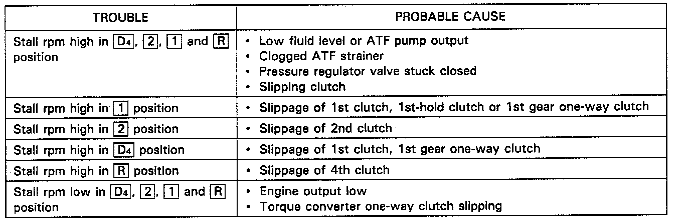

Stall Speed Test

CAUTION:
- To prevent transmission damage, do not test stall speed for more than 10 seconds at a time.
- Do not shift the lever while raising the engine speed.
- Be sure to remove the pressure gauge before testing stall speed.
1. Engage the parking brake, and block all four wheels.
2. Connect the tachometer, and start the engine.
3. Make sure the A/C switch is OFF.
4. After the engine has warmed up to normal operating temperature (the radiator fan comes on), shift into 2 position.
5. Fully depress the brake pedal and accelerator for 6 to 8 seconds, and note engine speed.
6. Allow two minutes for cooling, then repeat the test in 1, D4 and R positions.
NOTE:
- Stall speed tests should be used for diagnostic purposes only.
- Stall speed should be the same in D4, 2, 1 and R positions.
- Stall Speed RPM: rpm
Specification: 2,400 rpm
Service Limit: 2,200 - 2,600 rpm